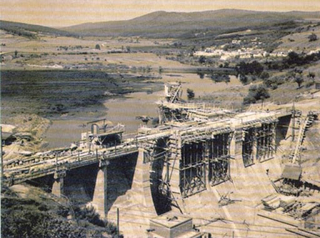
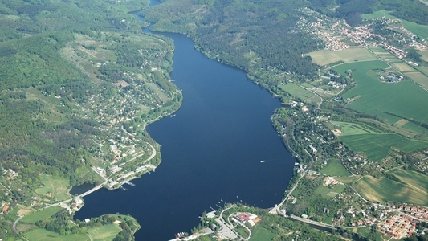

O historii přehrady, její výstavbě a současném užití
První úvahy o vybudování přehrady v těchto místech se datují až k roku 1872, kdy vznikly prvotní plány, ale dále se nepokročilo. Po konci první světové války byl vypracován první projekt na stavbu přehrady, který byl ve dvacátých a třicátých letech několikrát přepracován. Samotná realizace začala v roce 1936, a přestože stavbu zpomalovaly povodně (zejména v srpnu 1938) a nelehká politická situace na konci třicátých let, podařilo se ji dokončit již v roce 1940. Nádrži musela ustoupit obec Kníničky, kde bylo zaplaveno 108 domů. Místní byli finančně kompenzováni a dostali od státu odpovídající parcely mimo zatopenou oblast, kde vznikla obec Nové Kníničky. V období okupace (1940–1945) měl být v rámci dopravního spojení Vídeň–Vratislav postaven v těsné blízkosti hráze dálniční most, který by překlenul údolí řeky Svratky. Tento záměr však nebyl realizován. Z celého projektu zůstal pouze pilíř ve svahu pod hrází. Na jaře roku 1945 chtěla ustupující německá vojska vyhodit horní část hráze do povětří. Nad přepady byly umístěny protitankové miny a čekalo se na chvíli, kdy přes hráz budou přejíždět sovětské tanky. Zásluhou hrázného Šikuly a jeho druhů, kteří ruské velení včas varovali, se tanky do léčky nenechaly vlákat. Tím bylo zabráněno odpálení min a následnému poškození statiky hráze. Svému osudu však neušel betonový most pod hradem Veveří. Z důvodu zpomalení postupu sovětů byl nacisty podminován a poté zničen. Jeho zbytky zde zůstaly až do roku 2002. V roce 2003 byla na stejném místě postavena lávka pro pěší a cyklisty.
V současnosti slouží vodní nádrž hlavně k výrobě elektrické energie a snížení povodňových průtoků. V původních plánech se počítalo s využitím vody z nádrže jako zdroje pitné vody pro město Brno, ale od tohoto záměru se po výstavbě upustilo a voda pro město se brala z řeky Svratky pod hrází. Proto již od konce druhé světové války slouží nádrž k rekreačním účelům a od roku 1946 zde funguje lodní doprava pro přepravu osob. Za 80 let od dokončení přehrady vznikly na obou březích rozsáhlé zahrádkářské kolonie (Rakovec, Kozí Horka, Osada a další). Nádrž je hlavně v letních měsících vyhledávaným cílem k odpočinku obyvateli Brna i širšího okolí. Se zvyšujícím se zájmem rekreantů o přehradu se rozrůstal i navazující sektor služeb, kdy se podél přehrady vystavělo množství hotelů a restauračních zařízení, na které navázalo vybudování několika pláží.
Správcem přehrady je Povodí Moravy, s. p. se sídlem v Brně. Číslo hydrologického pořadí je 4-15-01-147. Rozloha povodí činí 1 586,23 km2 a plocha nádrže je 259 ha. Hladina zásobního prostoru se nachází ve výšce 229 m n. m. (výškový systém Baltský po vyrovnání) s výškou hráze 23,5 m. Celkový objem nádrže činí 17,702 mil. m3 s průměrným dlouhodobým ročním průtokem 7,680 m3/s. Výkon elektrárny je 3,1 MW. Vodní nádrž spadá do katastrů Brno-Bystrc a Brno-Kníničky. Nádrž patří do kategorie s krátkou dobou zadržení, kdy trvá přibližně 1 měsíc, než se voda dostane od splavu u Tejkalova mlýna ve Veverské Bítýšce ke hrázi přehrady.